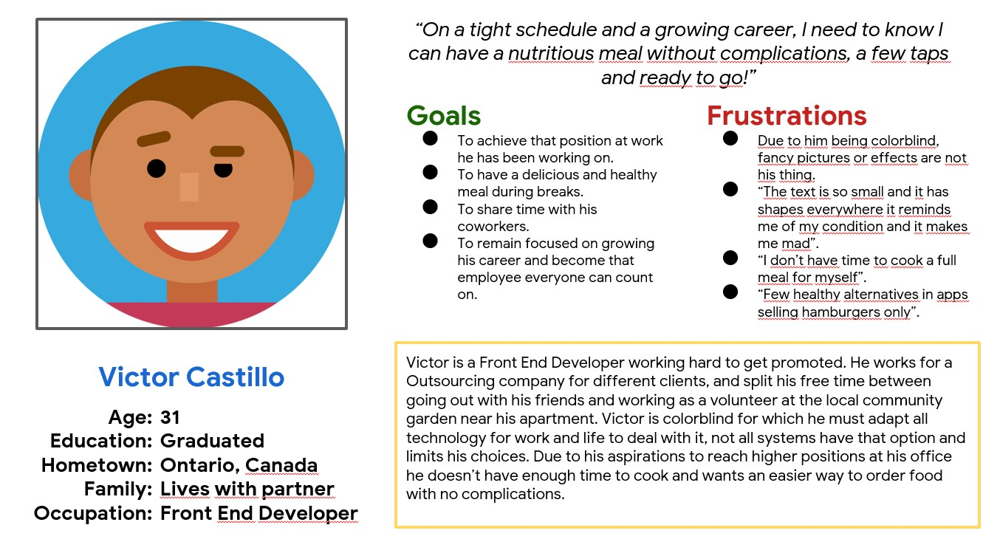
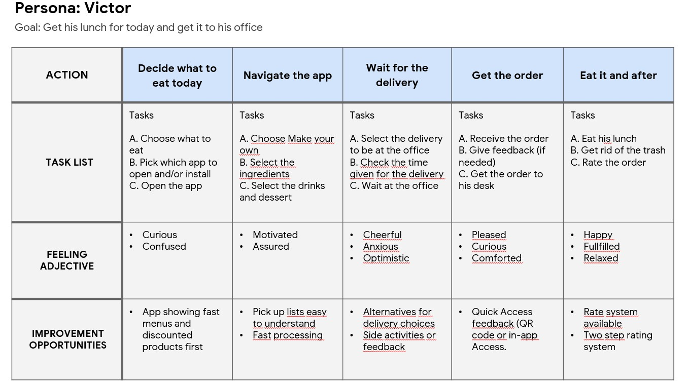
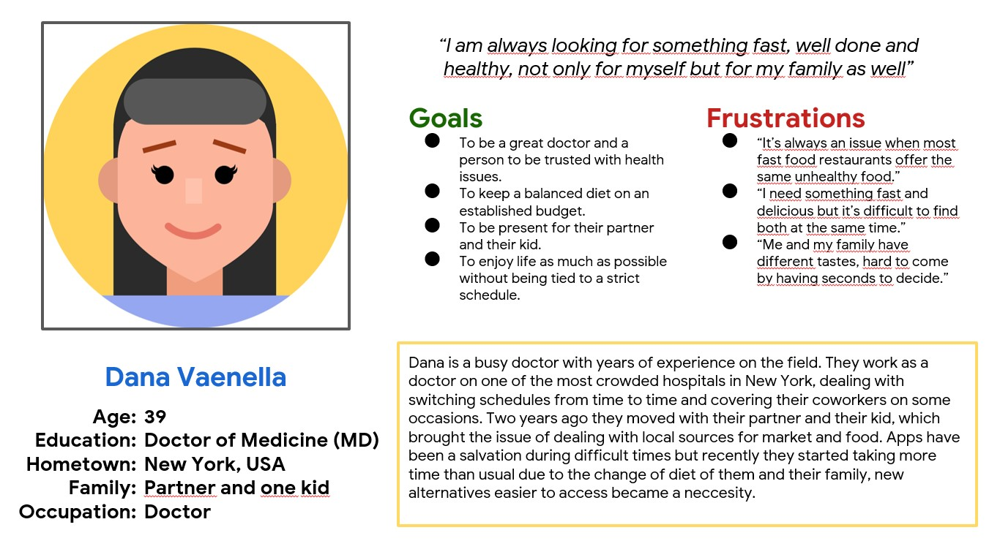
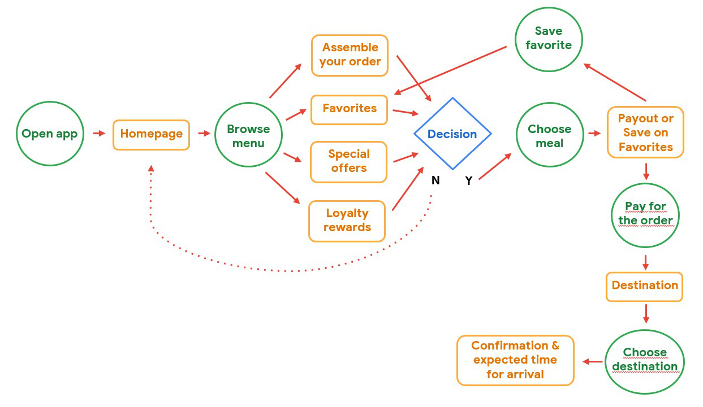

Project type: Personal project.
My roles: Researcher - Interviewer - UX design - Visual design - Prototype.
Duration: July to September 2022.
Tools: Figma.
The GSS app was developed to make the ordering food process, made of a sandwich, drinks and extras, quick and efficient for working people that follow tight schedulees and have little to no free time.
Due to their work schedules and side activities on their free time, users can't take healthy meals during their lunch breaks for them or their families.
Provide users with the option to assemble healthy meals quickly and give them the option to save their choices on a list to speed up the process in the future.
The research objective is to find the needs and experiences of users with previous solutions foreign to the proyect, this process was done twice on the initial proposal of the app, through unmoderated interviews, this were the findings:
The results of the interviews helped in the definition of two Personas. For that reason, to understand the situation better, a process map was created that follow users on an average food ordering app.
   Through the research done, it was discovered that users need a quick process for ordering food but they need to have control on the ingredients it will have and they need to understand what they are doing, for that reason the solution must provide defined steps, easy to use and they will follow an efficient flow:
Two usability tests were done on 4 participants each session, the results founded the definitive changes applied in the development of the app.
The development of this app let me see a set of steps required to follow in order to achieve an objective that goes beyond the mentality of the designer, the emphaty and desicion-making is focused totally in the user.
The variety on the requirements shows a considerable challenge at the time to bring solutions and listen all of them is a huge assistance for the project and future enterprises, analyze and gather information with like-minded people, in knowledge but different in points of view, is the best experience any team member looking for solutions that improve people's conditions is always something to be grateful.